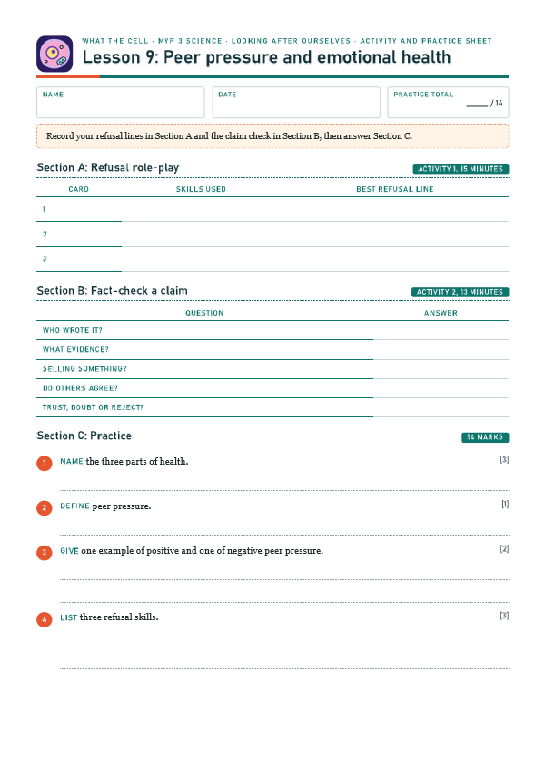

By the end of the lesson you can
- Outline physical, emotional and social health
- Distinguish between positive and negative peer pressure
- Practise refusal skills
- Evaluate a health claim from the internet
Keys: arrows or a presentation clicker move the slides, F for full screen. Slides with a red dot have a video or simulation.
Videos (all 5 minutes or less)
- 2:01
Deny the Pressure: Saying No to Negative Peer Pressure
Fresberg Cartoon. While you watch: What strategies does the video show? Slide 10.
Simulations
- Lab
Print and practise

Activity and practice sheet
Used in the lesson’s activities, with practice questions. Your teacher has the answers.
Download (PDF)Lesson 9 slides
All 17 slides in one file, to read again or print. The video buttons on the slides open YouTube.
Download the slides (PDF)Revising? The Revision tab on the unit page has the unit notes and review.
Class activity pack
Everything to print for the lesson’s activities: picture cards, sorting mats, station cards with their kit lists, and the teacher’s set-up notes. Print it before class.
Download the activity pack (PDF)Notes: Peer pressure and emotional health
peer pressure
Influence from people your own age to act a certain way. For example: joining in to fit in.
positive pressure
Pressure that encourages healthy choices. For example: a friend gets you to join a team.
refusal skills
Ways to say no clearly and stay safe. For example: "No thanks, I'm good.".
emotional health
How well we understand and manage feelings. For example: coping with stress.
social health
Having healthy relationships. For example: supportive friends.
resilience
Bouncing back after difficulties. For example: trying again after failing.
refusal skill
A clear way to say no while staying safe and respectful. For example: say no, give a reason, suggest something else.
Key words
| peer pressure | influence from people your age |
|---|---|
| refusal skill | clear way to say no |
| emotional health | managing feelings |
| social health | healthy relationships |
| resilience | bouncing back |